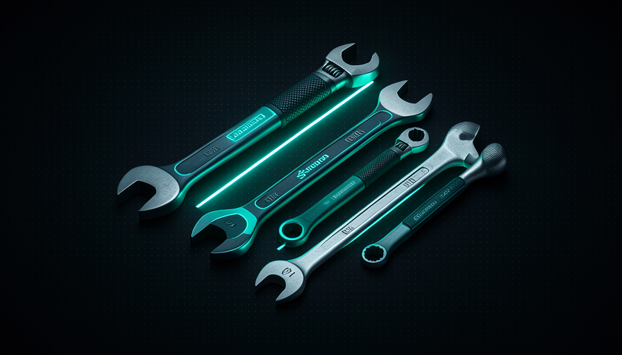

📖 Living glossary (read first — come back whenever you need to)
Track 1 has already defined the basic vocabulary (model, prompt, agent, skill, harness). Here in Track 5, “Solutions,” we define the NEW terms that appear in the reset:
🧹 Why reset
🧠 Imagine it this way: your car has 40 accessories hanging off it — an old GPS, three phone mounts, stickers, stacked floor mats. You don’t even use half of them. The car gets heavier, and you forget what each thing does. The solution isn’t to "buy a better accessory": it’s to empty the car and just put back what you actually use.
At the end of the conversation, Matt Pocock gives advice that seems counterintuitive if you’re used to accumulate tools: "everyone bloats up their context window with too much stuff." Almost everyone stuffs the context window with too much stuff—dozens of skills, plugins, MCP servers and instruction files it never opens. The result is context bloat: the agent gets slower, more expensive, and, ironically, less smart, because some of their attention is lost managing what you’ve piled up.
The reason is straightforward: each skill carries a description that takes up space in the context, even when you don’t use it for that task (you saw this in module 3.2, “Skill context cost”). Add dozens of them and AI starts every conversation already loaded with noise. The two-step reset solves this at the root: instead of trying to fine-tune a mess that grew without intention, you go back to zero and rebuild with purpose. The common mistake here, the assumption is that “more skills = a better agent”—the opposite is true: a skill you don’t use is dead weight taking up space in your context every time.
The reset replaces a cluttered context (red) with a clean agent (teal)—and only then do you rebuild with intention.
⚠️ Common beginner mistake
Treat skills like trophies ("I installed 50!"). Every one you don't use is baggage that comes into every conversation. Maturity isn't about how many you have — it's about how few, and how well chosen.
In one sentence: everyone bloats the context with too much stuff — resetting to zero is the fastest way to get a smarter agent.
🗑️ Delete everything (step 1)
🧠 Imagine it this way: Before reorganizing a closet, you take EVERYTHING out and leave the closet empty. Only when it’s empty can you see the true size of the space and decide, one item at a time, what deserves to go back.
Step 1 is literal and radical. In Pocock's words: "delete everything — every skill, plugin, MCP server, your CLAUDE.md, agents.md — go back to absolute zero." Delete every skill, every plugin, every Your MCP server CLAUDE.md and your AGENTS.md. Go back to absolute zero. It’s not “disable” or “clear a little” — it’s emptying it out. The idea is to be able to see the agent afterward without any of your layers on top.
Before running, do backup (resetting is reversible only if you saved the files). That’s why the copybox below first move everything to a safety folder instead of deleting it for good — that way you can return to zero without losing anything. In Claude Code, the settings live in ~/.claude/ (skills, plugins, your CLAUDE.md) and the MCP servers are declared in a config file. Moving those folders already puts the agent in a blank slate.
# PASSO 1 — Deletar tudo e voltar ao ZERO absoluto.
# (move pra um backup datado em vez de apagar — reversível)
STAMP=$(date +%Y%m%d-%H%M%S)
BACKUP="$HOME/.claude-backup-$STAMP"
mkdir -p "$BACKUP"
# 1) skills, plugins e o seu CLAUDE.md global
mv ~/.claude/skills "$BACKUP/skills" 2>/dev/null
mv ~/.claude/plugins "$BACKUP/plugins" 2>/dev/null
mv ~/.claude/CLAUDE.md "$BACKUP/CLAUDE.md" 2>/dev/null
# 2) CLAUDE.md / AGENTS.md do projeto atual
mv ./CLAUDE.md "$BACKUP/project-CLAUDE.md" 2>/dev/null
mv ./AGENTS.md "$BACKUP/project-AGENTS.md" 2>/dev/null
# 3) remover TODOS os MCP servers (lista e apaga um a um)
for s in $(claude mcp list 2>/dev/null | awk '{print $1}'); do
claude mcp remove "$s" 2>/dev/null
done
echo "Blank slate pronto. Backup em: $BACKUP"
echo "Agora abra o agente e OBSERVE-o no modo puro."
Step 1: everything is removed from ~/.claude/ to a dated backup (reversible) — and the agent stays at absolute zero.
🔬 Worked example: João’s reset
João had 28 skills installed, 4 MCP servers, and a CLAUDE.md that had grown to 600 lines over several months. The agent was slow and sometimes "forgot" the request halfway through.
- Ran the script above → everything went to
~/.claude-backup-20260619-201500. - Opened the agent: initial context dropped from ~40k tokens of config to practically zero.
- Asked for a simple task and watched the agent pure resolving (next topic).
- Result: faster, more direct responses—and it realized it only missed 3 skills, not 28.
Going deeper (optional): why move instead of delete?
Move (mv to a backup) has the same effect as "going back to zero" — the agent can no longer see anything — but keeps a safety net. If in step 2 you realize you missed a specific skill, it's intact in the backup and you can restore it in seconds. Deleting it for good (rm -rf) only makes sense after you’ve rebuilt it and are sure you don’t want anything from the old one anymore.
In one sentence: deliberately clear it out—move skills, plugins, MCP, CLAUDE.md, and agents.md to a backup and return to absolute zero.
👀 Observe the agent on its own
🧠 Imagine it this way: before giving someone crutches, you watch how they walk on their own. Maybe they already walk well — and the crutches were only getting in the way. You only find out after watching without help.
With the blank slate ready, comes the part almost everyone skips: stop and take a look. Pocock is explicit—after deleting, "observe the agent": see what the agent does in basic mode. Give it real tasks from your day and watch how it handles things without any of your layers. The goal isn’t to judge quickly; it’s to honestly discover what it can already handle on its own.
Why does this matter so much? Because today’s models are a lot more capable than they were when you installed half your skills. Many of them exist to "fix" behaviors the current model already gets right on its own — so they’re just adding noise. By observing the bare agent, you create a honest list of gaps: “it struggled here,” “it made up a pattern I don’t want,” “it was perfect here.” This list will guide step 2. The common mistake is resetting and, in a panic, putting everything back in the first half hour — you never get to see the agent on its own and lose all the learning.
Quick retrieval: what is the goal of observing the unassisted agent right after the reset?
In one sentence: watch the pure agent work—it already does more than you think, and what’s missing becomes your list.
🧱 Rebuild with procedures
🧠 Imagine it this way: When renovating the empty closet, you don’t throw everything back in. You install shelves (structure) and put away one item at a time, asking, “Do I use this every week?” Anything that goes in gets a label and a place.
Step 2 is to rebuild — but with a rule. Pocock specifies: when bringing things back, prefer procedures, not abilities. Remember the distinction (module 3.1): a procedure is something you call on purpose (like a command /grill-me); a ability is something the model decides to invoke on its own, which is why its description always loads into the context. Procedures are "on demand": they only add weight when you invoke them. That's exactly the opposite of the bloat that prompted the reset.
Pocock adds an important detail: install it in a way that lets you customize and experiment. It’s not just “reinstalling from the same place”—it’s bringing in each piece with an understanding of why it exists and the ability to change it. The reason: this way, you stay in control of the harness (the theme of the entire course) instead of becoming dependent on an opaque package. The common mistake the trap is, in a hurry, installing a plugin giant that dumps 30 abilities—you just recreated the bloat you had deleted. Layer by layer, procedure by procedure.

✓ Re-layer correctly
- • One layer at a time.
- • Prefer procedures (you invoke them).
- • Install in a customizable way.
- • Only what the gap proved was missing.
✗ Re-layer incorrectly
- • Dump in a giant plugin.
- • Stuff it with abilities “just in case.”
- • Reinstall everything from the backup all at once.
- • Not know why each piece is there.
In one sentence: rebuild with procedures (that you invoke) and in a customizable way — one layer at a time, never one giant plugin.
🎯 Bring in only what’s missing
🧠 Imagine it this way: back from the trip, you unpack only as you need things. On day 3, you still haven’t grabbed the coat—so maybe you didn’t need it after all. You bring back only what real life called for.
This is the golden rule for step 2: bring back only what you miss. Pocock gives a concrete example—you might rediscover that you want the skill for Superpowers brainstorming, so install this, and only that. No “I’ll put everything back because it might be useful someday.” If a gap actually came up while you were observing the bare agent (topic 3), it deserves a new piece; if it didn’t, it doesn’t.
In practice, you install each skill you need with the command from the skills repository (Matt’s, for example). Pocock’s full workflow connects to the rest of the track: after rebuilding a lean harness, you "finds problems → finds solutions → delegates the implementation to an AFK agent" — and he sums up AFK like this: "AFK is just incredible — takes a bit of setup, but then it goes crazy." In other words: the reset isn’t an end in itself; it’s what leaves your harness clean enough for you to operate at a high level. Copy step 2 below:
# PASSO 2 — Recamadar: trazer de volta SÓ o que você sentiu falta. # Regra: uma de cada vez, preferindo procedures, instaladas de # um jeito que você possa CUSTOMIZAR/experimentar. # Você observou o agente puro e sentiu falta de "brainstorming"? # Então traga SÓ ela (não o pacote inteiro): npx skills latest add brainstorming # Sentiu falta de mais uma? Adicione conforme a lacuna aparecer: npx skills latest add grill-me # npx skills latest add <outra-skill-que-fez-falta> # Confira o que está instalado agora (deve ser uma lista curta): ls ~/.claude/skills # DICA: prefira instalar como PROCEDURE (você invoca, ex.: /grill-me) # em vez de ability (o modelo invoca sozinho e a descrição pesa sempre). # E NÃO reinstale o backup inteiro — ele continua em ~/.claude-backup-* # só como rede de segurança.
In one sentence: reinstall only what observation showed was missing — one skill at a time, via npx skills latest add.
🧪 Customize to experiment
🧠 Imagine it this way: a recipe you downloaded isn’t law—it’s a starting point. You taste it, adjust the salt, swap an ingredient. The recipe becomes yours. Skills are the same: install them, but tweak them until they work your way.
The last piece of advice is the one most people forget: install skills in a way that customizable, so you can experiment. Pocock emphasizes this on purpose—an outside skill is a good start, not the final word. When you install via npx skills latest add, the skill file lives on your machine, in ~/.claude/skills/, and you can open and edit: adjust the tone, cut what doesn’t fit your project, adapt it to your workflow. That’s how the harness becomes your instead of a generic copy. Keep the cycle going: installed → used → didn’t work? Remove it; worked but something was missing? Edit it. The common mistake is treating an installed skill as untouchable and going back to accumulating — the reset only works if you keep pruning. Copy the checklist below and paste it at the top of your next reset:
RESET DE 2 PASSOS — checklist (o conselho final do Pocock) PASSO 1 — DELETAR TUDO (blank slate): [ ] backup das skills, plugins, MCP, CLAUDE.md e AGENTS.md [ ] volte ao ZERO absoluto (mova tudo pra fora) [ ] abra o agente e OBSERVE-o no modo puro com tarefas reais [ ] anote as LACUNAS de verdade (não as imaginárias) PASSO 2 — RECAMADAR COM INTENÇÃO: [ ] traga de volta SÓ o que sentiu falta [ ] prefira PROCEDURES (você invoca) a abilities (o modelo invoca) [ ] instale de jeito CUSTOMIZÁVEL: npx skills latest add <skill> [ ] abra a skill e ADAPTE ao seu projeto/estilo [ ] uma camada por vez — nunca um plugin gigante DEPOIS: ache problema -> ache solução -> delegue a um agente AFK.
Quick recall: when rebuilding in step 2, what does Pocock recommend prioritizing?
In one sentence: an installed skill is a starting point — open it, adapt it, and keep trimming it; resetting is a habit, not a one-time event.
🧾 Module Summary
Next module:
5.2 — grill-me + 10 decisions: the skill that interviews you and aligns everything before coding.